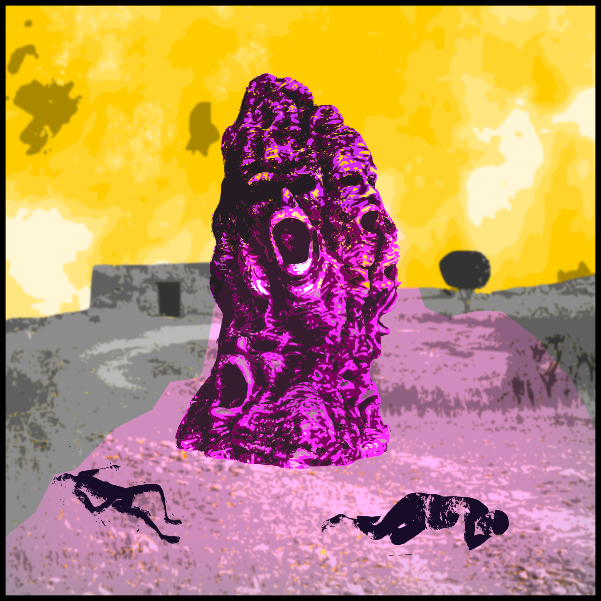

GOLEM28
The Simulacrum Awakens
Golem28 is a tactical skirmish kitbasher wargame where players must carefully plan their actions, bet on successful outcomes, and destroy their enemies. The game takes place in a dark fantasy world full of woes, tragedies, and misfortune.
In this game, you do not just command an army; you build a "simulacrum" led by an Animator, supported by the terrifying golems they have brought to life, and accompanied by other followers. The animator is the true mastermind and the only unit capable of issuing commands to their golems, hulking monstrosities that possess no actions of their own.
At its core, Golem28 celebrates the hobbyist. Golems can be crafted and kitbashed from anything, old DnD minis, thrift store figurines, or literal trash. Animators and followers can be any 28mm minis you have from adjacent fantasy games.


The Tools of Creation
Access the core systems and mechanics required to bring your abominations to life.